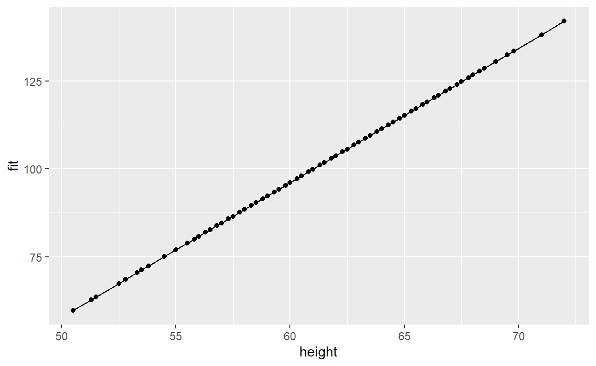
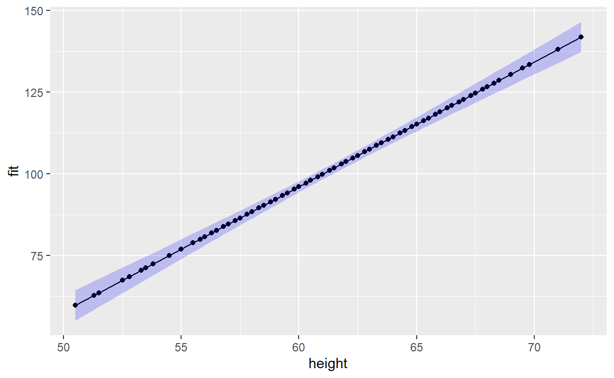

LAB MATERIALS
Lab 02 Goals
- Estimate crude measures of disease frequency and 95% confidence
intervals (95% CI) using generalized linear models.
- Estimate crude measures of effect and 95% CI using generalized
linear models.
- Learn how to code categorical variables for models and cross
tabulations, including disjoint indicator variables for categorical
variables with more than 2 categories.
- Assess for potential confounding and effect measure
modification.
- Learn how to properly specify a model using backward, stepwise regression techniques.
Lab 2 & 3 Grading scheme
Lab 2
| Competency | Points |
|---|---|
| .Rmd file runs without error | 10 |
| Table 1 | 10 |
| Table 2a | 10 |
| Table 2b | 5 |
| Table 3 | 10 |
| Figures | 15 (5 points each) |
| Total | 60 |
Lab 3
| Competency | Points |
|---|---|
| .Rmd file runs without error | 10 |
| Table 4 | 5 |
| Table 5 | 10 |
| Table 6 | 5 |
| Short answer questions | 20 (4 points each) |
| Total | 55 |
Data and assignment
The assignment and dataset are both available on Sakai
Packages
- {tidyverse}
- {fastDummies}
- {lmtest}
- {biostat3}
Readings and Resources

Competencies
The following sections contain the competencies and code that you will need to complete labs 2 and 3.
Tabular analysis (frequency counts)
You will generate the values for tabular analysis using the same code as we used last semester. Please refer to last semesters lab 1 resource guide for guidance:
Link to 705 lab 1, tabular analysis
Summary of GLM
GLM (or Generalized Linear Models) are a family of modeling methods that can fit linear and non-linear models. They can be classified according to the distribution of the outcome variable (i.e.dependent/response) and the link function, which specifies the relationship between the dependent variable (Y) and a linear combination of covariates (\(\beta_1\)\(\beta_i\)), as summarized below.
| Outcome | Regression Model | Distribution | Link(\(g(Y)\)) | Form |
|---|---|---|---|---|
| Continuous | linear | Normal | identity | \(Y = \beta_0 + \beta_1X_1...\beta_kX_k\) |
| Binary | linear risk | binomial | identity | \(R = \beta_0 + \beta_1X_1...\beta_kX_k\) |
| Continuous | linear | binomial | log | \(ln(R) = \beta_0 + \beta_1X_1...\beta_kX_k\) |
| Continuous | linear | binomial | logit | \(logit(R) = \beta_0 + \beta_1X_1...\beta_kX_k\) |
| Continuous | linear | Poisson | log | \(ln(Y) = \beta_0 + \beta_1X_1...\beta_kX_k\) |
In the table above:
- Y = a continuous dependent variable (outcome) or count variable (for Poisson models)
- R = a probability of a binomial outcome, e.g.risk (incidence proportion) or prevalence
- Distribution refers to the outcome variable
- Link is the functional relation between the dependent variable and the linear combination of covariates (which is referred to as the linear predictor: \(\beta_0 + \beta_1X_1 + \beta_kX_k\))
Additional resources:
Here is a PDF of model forms and estimation for linear, log and logit risk models.
Log-linear and Logit
models with glm()
Note: this SO question and this stackexchange query are very helpful, and may be of interest to some students.
In 707 Lab 1, you may remember we fit a linear regression model using the sum of squared errors algorithm (SSE). Our code looked like this:
m2_lm <- lm(weight~height, data=regdat)
Well, turns out, we can fit the same model using the
glm() function. This will fit the same model but will use a
likelihood-based estimation algorithm instead of
SSE:
m2_glm <- glm(weight ~ height, data = regdat, family = 'guassian'(link = 'identity'))
You will notice that in order to use the glm function, we also have
to specify the distribution of the response variable using the
family = option and the link function using
link =.
For Lab 2, our only response variable is death, which is binary, so
our family is going to be "binomial"; however,
our link function will differ depending on the measure of effect we want
to estimate:
| Desired effect measure | Link function name |
|---|---|
| Risk difference | link = "identity" |
| Risk ratio | link = "log" |
| Odds ratio | link = "logit" |
Note that we will have to exponentiate our regression coefficients for the log and logit models since these models are fit on the log scale; For example, here is a model on the log-linear scale:
# fit model
m3 <- glm(death ~ education_1 + education_2,
data = kenya, family = 'binomial'(link = 'log'))
# log-scale coefficients
coef(m3)
(Intercept) education_1 education_2
-1.87180218 -0.07410797 -0.52609310 (Intercept) education_1 education_2
0.1538462 0.9285714 0.5909091 The log-scale coefficient is interpreted as the change in the
log-scale change in \(y\) given a
one-unit change in \(x\). In the above
example, since our model variables are disjoint and therefore binary, we
would say that the presence of education_2 (A mother with a
post-primary education) would result in a -0.526 reduced risk of death
on the log scale.
But once we have exponentiated our coefficients, we can interpret them on the risk ratio scale:
According to our model, the exposure of post-primary education
(education_2) has a risk ratio of 0.59 (a 41% decrease in
risk) when compared with the reference exposure of No education.
Confidence Limit Difference and Ratios (CLD/CLR)
Confidence Limit Difference (CLD) and Confidence Limit Ratio (CLR) are quick and useful measures of the precision of a parameter estimate and make it easier to compare estimates across studies. For example, two studies may report similar point estimates, but one may have a much wider 95% CI, meaning its value is less precise.
- \(CLD = [upper\ 95\%\ CI] - [lower\ 95\%\ CI]\)
- \(CLR = \frac{[upper\ 95\%\ CI]}{[lower\ 95\%\ CI]}\)
R Commands for models
Generate predicted values from linear models
The predict() functions are useful for computing
predicted values based on your model fit. This can generate a vector of
predictions based on your data used to fit the model. You can also use
data that is separate from the model fitting.
The only requirement is that the newdata column names
need to be identical to the variables in your model.
predict() is also useful for manually generating
confidence intervals of your fitted/predicted values.
How to use predict.lm()
First, lets make a model object:
model <- glm(weight ~ height, data = regdat)
Next, use predict.glm() to generate predicted values and
their confidence intervals using our model object:
model_predict <- predict.glm(model, interval = "confidence")
| x |
|---|
| 104.87070 |
| 108.69307 |
| 92.25687 |
| 105.63518 |
| 105.63518 |
| 92.25687 |
We could also join model_predict back to our original
data for
the purpsoe of plotting a line of best fit with confidence
intervals.
We can use cbind() to combine multiple columns of the
same length into a single data frame:
regdat <- cbind(regdat, model_predict)
| sex | age | height | weight | model_predict |
|---|---|---|---|---|
| f | 155 | 62.3 | 105.0 | 104.87070 |
| f | 153 | 63.3 | 108.0 | 108.69307 |
| f | 161 | 59.0 | 92.0 | 92.25687 |
| f | 191 | 62.5 | 112.5 | 105.63518 |
| f | 171 | 62.5 | 112.0 | 105.63518 |
| f | 185 | 59.0 | 104.0 | 92.25687 |
Linear Combinations from GLM models
The lincom() function from package {biostat3} can be
used to generate point estimates and confidence intervals for any
combination of covariable values in the model; these are referred to as
contrasts.
Run a model
First, lets use glm() to run a linear risk model to
predict the risk of birth order on death:
Call: glm(formula = death ~ bord5, family = binomial(link = "identity"),
data = kenya)
Coefficients:
(Intercept) bord5
0.13699 0.01116
Degrees of Freedom: 99 Total (i.e. Null); 98 Residual
Null Deviance: 80.99
Residual Deviance: 80.97 AIC: 84.97Here is our model equation as defined by the above output:
\[ \begin{eqnarray} R &=& \beta_0 + \beta_1*X \\ death &=& (Intercept) + bord5*X\\ &=& 0.1369863 + 0.0111618*X \end{eqnarray} \]
Predict risk when bord5 == 0
Lets use the lincom() command to calculate the
predicted risk of death for a child with birth order 1 - 4
(bord5 == 0):
lincom(model = m1, specification = "(Intercept) + 0*bord5", level = 0.95)
Estimate 2.5 % 97.5 % Chisq
(Intercept) + 0*bord5 0.1369863 0.05811226 0.2158603 11.5873
Pr(>Chisq)
(Intercept) + 0*bord5 0.000664037Notice how we use the specification = argument to
construct our linear combination by referring to the variables in our
model. Since \(0 * bord5\) will always
result in 0, we can simplify our specification even further and achieve
the same result:
lincom(model = m1, specification = "(Intercept)", level = 0.95)
Estimate 2.5 % 97.5 % Chisq Pr(>Chisq)
(Intercept) 0.1369863 0.05811226 0.2158603 11.5873 0.000664037Predict risk when bord5 == 1
Now, lets use lincom() to calculate the predicted risk
of death for a child with birth order >= 5
(bord5 == 1):
lincom(model = m1, specification = "(Intercept) + 1*bord5", level = 0.95)
Estimate 2.5 % 97.5 % Chisq
(Intercept) + 1*bord5 0.1481481 0.01415075 0.2821455 4.695652
Pr(>Chisq)
(Intercept) + 1*bord5 0.03023902Calculating risk difference (bord5 == 1 vs.bord5 == 0)
Next, we can use lincom() to calculate the risk
difference of death for birth order >= 5 vs.1 - 4.
Here is the model equation for risk difference in this example:
\[ RD = \beta_0 + \beta_1 - \beta_0 \] which reduces to \(RD = \beta_1\).
This means that in the lincom() command, we only need to
include our parameter for \(\beta_1\):
lincom(model = m1, specification = "bord5", level = 0.95)
Estimate 2.5 % 97.5 % Chisq Pr(>Chisq)
bord5 0.01116185 -0.1443258 0.1666495 0.01979595 0.8881085Multivariable and logit models
When you are working with log or logit risk models, use the argument
eform = TRUE to generate estimates that are already
exponentiated.
You may have noticed that the estimates above are quite trivial. If
you were paying attention, the estimate when bord5 == 0 was
identical to our intercept.
With more complex, multivariable models, the lincom()
command becomes very handy!
Nominal, ordinal, and disjoint indicator variables
Categorical variables can be represented as having values 1, 2, 3, , but one must be careful with such representations. Nominal variables have no inherent ordering (e.g., male = 0, female = 1, intersex = 2) and ordinal variables may be qualitatively ordered but may not have uniform linear spacing (e.g., low = 0, medium = 1, high = 2). Including such variables in models as linear terms means that the model is mis-specified and can lead to erroneous inference because the relationship between the outcome and categorical is assumed to be linear.
What is a disjoint indicator
Disjoint indicator (a.k.a., dummy) variables derived from nominal or ordinal categories removes the linear assumption and allows more flexibility in the shape of the outcome-predictor association.
Disjoint indicator variables are derived from categoricals by generating \(k\) new variables, one for each of the \(k\) levels of the categorical, as illustrated in the table below. You could leave out one of the indicator variables (the reference level), but I prefer to code all levels to allow flexibility in changing the reference level as needed.
| Original Coding | Original Labels | education_0 |
education_1 |
education_2 |
|---|---|---|---|---|
education == 0 |
no primary school | 1 | 0 | 0 |
education == 1 |
primary school only | 0 | 1 | 0 |
education == 2 |
post-primary education | 0 | 0 | 1 |
Example of indicators in a model
Here, we will build a linear risk regression model for education, coded with indicators.
Risk(preterm | education) = \(\beta_0 + \beta_1X_1 + \beta_2X_2\)
where \(X_1\)~ =
ed_primaryand \(X_2\)~ =ed_postand the referent category is no primary schoolIn this model
- No education: \(R_0 = [\beta_0 + 0*\beta_1 + 0*\beta_2] = \beta_0\)
- Primary school: \(R_0 = [\beta_0 + 1*\beta_1 + 0*\beta_2] = \beta_0 + \beta_1\)
- Post primary: \(R_0 = [\beta_0 + 0*\beta_1 + 1*\beta_2] = \beta_0 + \beta_2\)
- To calculate RDs with no primary school as the reference group and primary school only as the index group:
\[ \begin{eqnarray} RD[primary\ vs.\ no\ primary]&=& R_1 - R_0\\ &=& [\beta_0 + 1*\beta_1 + 0*\beta_2] - [\beta_0 + 0*\beta_1 + 0*\beta_2]\\ &=& [\beta_0 + \beta_1] - [\beta_0] = \beta_1 \end{eqnarray} \]
To calculate RDs with no primary school as the reference group and post-primary education as the index group:
RD[post-primary vs.no primary]:
\[ \begin{eqnarray} RD[post\ primary\ vs.\ no\ primary]&=& R_2 - R_0\\ &=& [\beta_0 + 0*\beta_1 + 1*\beta_2] - [\beta_0 + 0*\beta_1 + 0*\beta_2]\\ &=& [\beta_0 + 1* \beta_2] - [\beta_0] = \beta_2 \end{eqnarray} \]
- Risk Ratio and Odds Ratio are calculated similarly
Generate indicator variables in R:
There are at least 3 ways to make or model disjoint indicator variables in R.
Option 1: Manual indicator variables
For Task 2 and 3 in this lab, we would like you to
manually construct indicator variables. You can use
mutate() and case_when() or
ifelse() to create conditional statements that transform
your nice categorical variables to a matrix of ones and zeroes. Here is
an example of how we would do this using education in our
data frame:
This has created three new binary variables,
education_0, education_1, and
education_2, that each indicate the presence or absence of
that specific education level for each individual in the data:
| education | education_0 | education_1 | education_2 |
|---|---|---|---|
| 1 | 0 | 1 | 0 |
| 2 | 0 | 0 | 1 |
| 0 | 1 | 0 | 0 |
| 0 | 1 | 0 | 0 |
| 1 | 0 | 1 | 0 |
| 0 | 1 | 0 | 0 |
| 1 | 0 | 1 | 0 |
Option 2: fastDummies
For Task 4, feel free to try {fastDummies}. For
example, if we want to create disjoint indicator variables for the
strata of education by bord5, we might run the
following code to create the interaction variable:
kenya <- kenya %>%
mutate(education_bord5 = interaction(education, bord5))
This has created a new variable, education_bord5, that
contains 6 unique categories, one for each of the 6 possible unique
combinations of bord5 and education:
bord5 |
education |
Interaction Term |
|---|---|---|
| 0 | 0 | 0.0 |
| 0 | 1 | 0.1 |
| 0 | 2 | 0.2 |
| 1 | 0 | 1.0 |
| 1 | 1 | 1.1 |
| 1 | 2 | 1.2 |
Next, we can use dummy_cols() to create the disjoint
indicator variables associated with this interaction variable:
kenya <- dummy_cols(kenya, select_columns = "education_bord5")
| education_bord5 | education_bord5_0.0 | education_bord5_1.0 | education_bord5_2.0 | education_bord5_0.1 | education_bord5_1.1 | education_bord5_2.1 |
|---|---|---|---|---|---|---|
| 1.0 | 0 | 1 | 0 | 0 | 0 | 0 |
| 2.0 | 0 | 0 | 1 | 0 | 0 | 0 |
| 0.0 | 1 | 0 | 0 | 0 | 0 | 0 |
| 0.0 | 1 | 0 | 0 | 0 | 0 | 0 |
| 1.0 | 0 | 1 | 0 | 0 | 0 | 0 |
| 0.0 | 1 | 0 | 0 | 0 | 0 | 0 |
Since we are also fitting main effect parameters in our model
(bord5 and education), any combination of
education_bord5 that contains 0 is redundant. Once we
construct dummy variables, we will only want to include in our model
those dummy variables that do not contain 0.
Option 3: factor()
NOT RECOMMENDED FOR THIS LAB But feel free to use in your own practice in the future (This is what we did in 707 Lab 1).
The functions glm() and lm() automatically
treat factor type variables as disjoint indicator
variables. So if you have factored the variable, you can simply enter
the variable with the lm or glm commands.
For example, the following two bits of code run the same regression model:
Reference Categories and Factor-type Variables
Remember last semester?
We talked about the importance of setting a reference category? That concept applies here too. When doing regressions on disjoint categorical variables, we need a baseline against which we might compare the other levels of that variable.
The lowest level of a factor-type variable is treated as the reference category (in regressions, the intercept or \(\beta_0\))
We can change the reference category of a given factor
variable by directly setting the levels when constructing the factor
(using levels = c()).
If we need to change the levels of a factor, we can do so with
relevel().
Here, we see our current levels of education, in order
from 0 to 2:
levels(kenya$education)
#> [1] "No primary" "Primary only" "Post-primary"
Say we wanted to set "Post-primary" as our reference
category. We could do that with relevel()
Plotting risks versus exposures
Refer back to the section on using
predict.lm() to generate predictions and confidence
intervals, where we generated upper and lower confidence limits from
a model along with a models predicted values.
Once joined back to your original data, you can use those values to generate a scatter plot of the risks and upper and lower confidence limits, plotted against a predictor variable.
Run a model and predict
Remember that in the section on predict.lm(), we used the following code to run a model, generate predictions and confidence intervals, and then join those values back to our original data:
model <- lm(weight ~ height, data = regdat)
model_predictions <- predict.lm(model, interval = "confidence")
regdat <- cbind(regdat, model_predictions)
Plot predictions
We can use those values to plot our predictions (and their confidence
intervals) against the primary predictor variable of interest (in this
case, height).
First, lets just plot our predictions
p1 <- ggplot(data = regdat, aes(x = height, y = fit)) +
geom_line() +
geom_point()
p1

We can add a confidence interval using the {ggplot2} function
geom_ribbon().
p1 + geom_ribbon(aes(ymin = lwr, ymax = upr), alpha = 0.2, fill = "blue")

The Likelihood Ratio Test (LRT)
In general, the LRT can be used to determine whether a larger model with extra variable(s) fits the data better than a smaller model without the extra variable(s) (e.g., 2 models with and without an interaction term or 2 models with and without age as a term).
Specifically, the LRT statistic tests the null hypothesis that a larger model maximizes the likelihood of the observed data no better than a reduced model that includes fewer covariates.
Critical point the models must be strictly comparable, so
- The variables in the reduced model must be a strict subset of those in the larger model
- The observations (e.g., people) in both models must be identical; the models are not strictly comparable if you have missing data in a variable included in the larger model because you are making estimates on different datasets
- If either of these conditions is not met, the LRT is invalid because you are comparing apples to oranges.
In this section of the lab, we will use the LRT to determine whether a model that allows effect estimates to vary across covariate strata (heterogeneity) fits the data better than a model that assumes a constant RD, RR or OR (homogeneity or constancy).
Calculate manually
The likelihood ratio test statistic is 2X the difference between the log likelihoods of (the reduced model minus the full model):
\[ \begin{eqnarray} LRT\ Statistic &=& (-2*LogLikelihood(reduced\_model)) - (-2*LogLikelihood(full\_model)) \\ &=& (Deviance(reduced\_model) - (Deviance(full\_model)) \end{eqnarray} \]
The LRT statistic is distributed as a Chi-square with degrees of freedom:
\[ df = k_{full\ model} - k_{reduced\ model} \]
Where k is the number of variables in the model.
Extract log-likelihood from model:
If youre curious, you can run this calculation in R. To do this, we need to first extract the log likelihood from each of our models.
You can do this with the command logLik():
logLik(model)
The output of logLik() can then be plugged into the
equation above.
Calculate in R with
lrtest()
You can use the lrtest() command from the package
{lmtest} to perform a likelihood ratio test comparing the two
models.
If they arent already stored in the R environment, run your full model and reduced model and assign them a variable name. For example:
Then perform the likelihood ratio test by plugging both models into the command:
lrtest(lm_reduced, lm_full)
Categorical vs.Continuous Coding
Some exposure variables may be either analyzed as continuous or categorized according to:
- customary or clinical cut points (e.g., body mass index (BMI)
- categories based on values used to classify people as underweight,
normal, overweight or obese)
- empirical cut points (e.g.tertiles or quartiles), a priori cut
points relevant to biologic mechanisms
- potential public health interventions
- other factors of interest or by cut points used commonly in the literature (this would allow comparisons between your results and what has been published previously).
The least restrictive way to model continuous variables would be to estimate separate risks for each value (e.g.each year of maternal age). However, this approach would yield highly imprecise estimates and is not recommended.